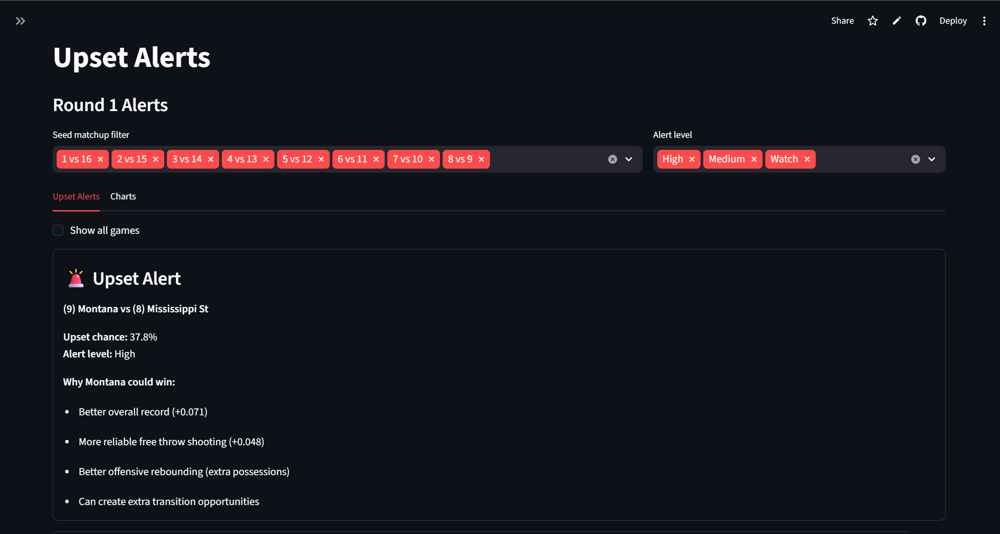

March Madness Upset Analytics
Built an end-to-end analytics platform to identify and explain potential NCAA Tournament upsets. The app combines historical performance data, team-level features, and probabilistic modeling to surface high-risk matchups and generate data-driven bracket recommendations through an interactive Streamlit dashboard.
More details
Problem
March Madness is inherently unpredictable, making it difficult to consistently identify which lower-seeded teams have a realistic chance to win. Most brackets rely on intuition or surface-level stats, which fail to capture deeper performance signals. There is a need for a structured, data-driven approach that quantifies upset probability and provides clear reasoning behind each prediction.
Approach
Built a full data pipeline that integrates NCAA tournament data, team-level performance metrics, and seed information to construct Round 1 matchups and beyond. Engineered features such as efficiency metrics, power ratings, and historical performance indicators, then applied probabilistic modeling to estimate win likelihoods for each game. Developed logic to identify underdogs, assign upset probabilities, and generate interpretable “why” factors based on feature differentials. Deployed the system as an interactive Streamlit app with modules for upset alerts, bracket building, and tournament simulations.
Results & Impact
Delivered an interactive Streamlit app capable of generating upset probability scores for any Round 1 matchup. The model surfaces high-risk games with interpretable reasoning — showing which specific feature differentials (e.g. efficiency gap, power rating delta) drive each prediction. Bracket simulation module allows users to run full tournament scenarios and compare upset-adjusted outcomes against seed-based expectations.